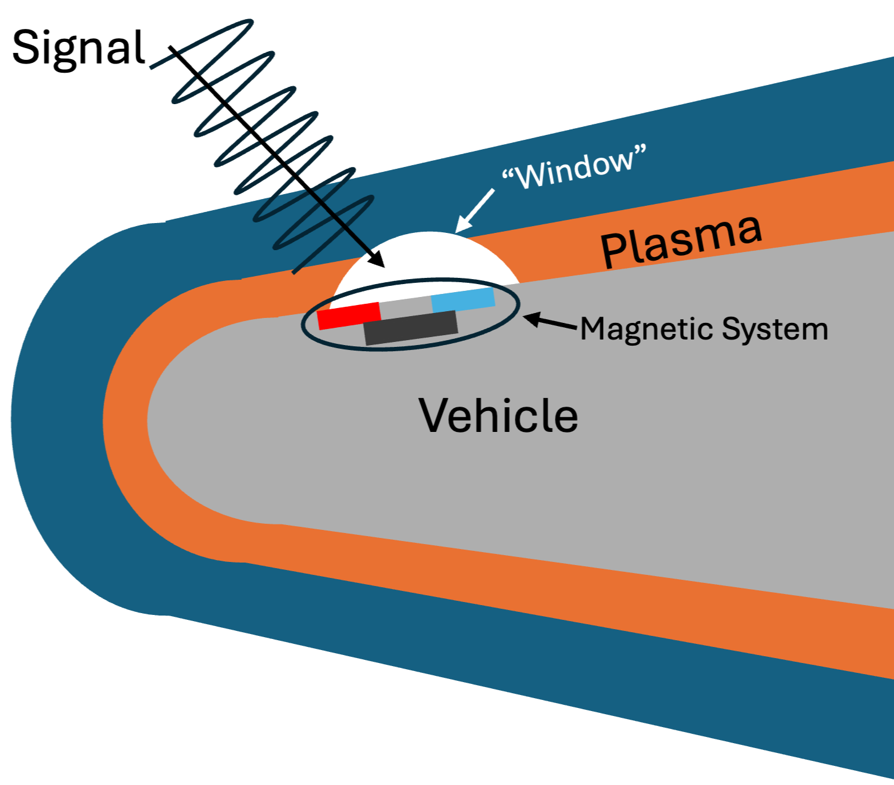

Computational Modeling of Hypersonic Flow and Electromagnetism
Because just CFD wasn't enough...
The Problem
High temperature reentry and ballistic trajectories result in a plasma sheath around hypersonic vehicles, leading to communication blackouts that can last from seconds to several minutes. The blackout degrades communications, datalinks, GPS signals, and radar sensing. Consequently, in these minutes, the vehicle can travel hundreds of miles without updating or reassessing its telemetry data. Various mitigation methods, such as aerodynamic shaping, electrophilic injection, tetrahertz propagation, and magnetic windows, have been studied.
Magnetic Windows
Magnetic windows offer an opportunity to part the plasma flow and allow a momentary connection with satellites or data links. Modern developments have suggested that magnetic systems may be lighter and more feasible.

The Research Goal
Design an informed magnetic system.
The Solver Hiccup
Open source computational fluid dynamics (CFD) tools that are capable of modeling high-speed compressible flows in conjunction with Maxwell’s equations are rare. Existing tools, such as CFDWarp and COOLFluid, are licensed and inaccessible to non-collaborators. Open codes such as OpenFOAM may have some nascent capabilities, but documentation is often sparse and available at the will of developers.
Furthermore, research into the communication blackout problem often requires multitool workflows, combining chemistry tools with CFD and then moving into computational electromagnetics (CEM) tools to assess attenuation of the signal. This is costly and time consuming to export and reformat data for each tool for a single example case.
Proposal
This research project aims to create an additional module that works with an open source computational fluid dynamics solver that is validated for hypersonic flow to couple the flow physics with electromagnetic behavior. Combining this tool with ray tracing tools would allow for a streamlined workflow that bypasses the multitool requirements for current research.
Potential Impact
This allows for the extension into informed magnetic window designs, as well as impact on the flow behavior, without needing to run expensive wind tunnel or flight tests. This research would also improve turnaround speeds for a computationally time-consuming workflow.
Methodology
This project will build on an existing solver (EILMER, SU2, US3D, etc) with the necessary capabilities to accurately model hypersonic flow and thermochemistry.
Milestones and Evaluation Metrics
| Milestone | Target Date | Deliverable | Evaluation Metric |
|---|---|---|---|
| Evaluate candidate physics/diffusion models | TBD | Short comparison of candidate models against the target regime | TBD |
| Decide implicit vs. explicit time integration | TBD | Written justification and stability/cost estimate | TBD |
| Implement EM coupling module | TBD | Working module integrated with chosen solver | TBD |
| Validate against Hartmann flow | TBD | Velocity/field profiles vs. analytic solution | TBD |
[work in progress — dates and metrics not yet finalized]
References
[work in progress]